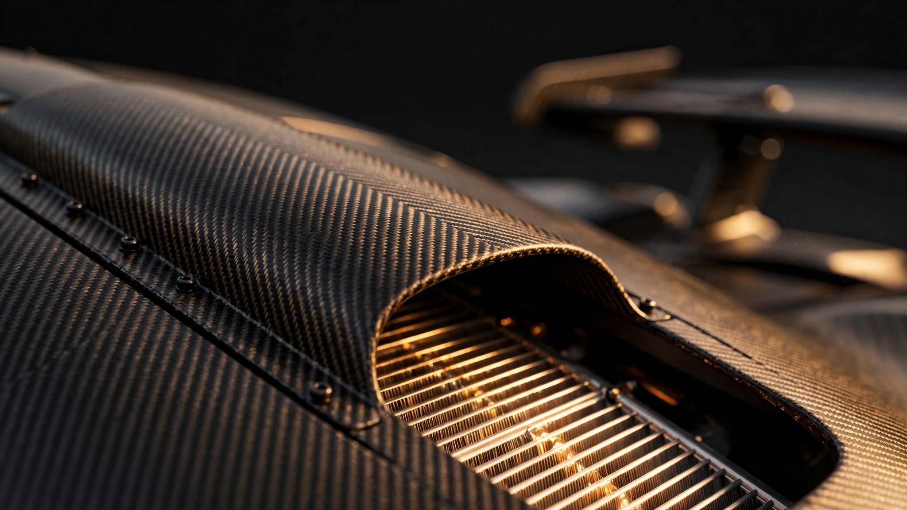

Seven Cooling Paths and Zero Visible Scoops: How the Valhalla's Body Does the Radiator's Job

Look at the Aston Martin Valhalla from any angle and you will not find an obvious cooling scoop on its flanks. No gaping NACA ducts. No afterthought louvers cut into the bodywork as a thermal Band-Aid. For a car producing 1,079 PS from a mid-mounted hybrid powertrain, that absence is strange. Where is all the heat going?
Everywhere. Every major body panel on this car is secretly part of the cooling system. Doors are ducts. Roof is an engine intake. Diffuser tunnels carry exhaust. A front wing can selectively bypass its own cooling function when downforce matters more. Aston Martin Performance Technologies, the consulting arm of the Aramco Formula One team, spent years embedding thermal management into the car's structure so deeply that the surfaces you admire are also the surfaces rejecting heat.
Understanding how requires walking through all seven cooling paths, starting at the roof and working down.
One Snorkel, Three Jobs
Rising from the Valhalla's roofline is an F1-inspired snorkel housed in a built-in channel. From outside, it looks like a subtle ridge. Inside, it funnels high-pressure air to three separate systems simultaneously: the engine's intake tract, the Air Charged Air Coolers (ACACs) mounted directly above the V8, and the hot-V valley between the cylinder banks where the turbochargers sit.
Mounting charge coolers on top of the engine is unusual. Most mid-engine cars place intercoolers in the sidepods or rear fenders, connected to the intake manifold by lengthy pipes. Long pipes mean more pressurized air volume between the compressor outlet and the intake valves. More volume means more lag when the driver lifts and reapplies the throttle. By feeding cooled charge air from directly above into the engine below, the Valhalla minimizes that transport distance.
Aston Martin's engineers developed a new mounting strategy for these roof-fed ACACs that saved more than 5 kg compared to the conventional approach. Five kilograms sounds minor, but it sits at the highest point of the car. Removing mass from the roof lowers the center of gravity without touching the chassis or the powertrain.
Flanking the roof snorkel are two wing-like panels that open to reveal the fuel filler on one side and the hybrid battery charge port on the other. Even the access panels serve double duty, contributing to the smooth airflow over the roof by remaining flush when closed and directing air laterally when opened.
Doors That Breathe
Here is the Valhalla's most inventive thermal trick. Open one of its dihedral doors and look at the inner surface of the outer skin. Instead of flat panel stamping backed by a structural frame, you will find sculpted channels. Aston Martin turned the interior of each door into an aerodynamic duct.
In operation, air exits the front wheel arches at high velocity. Conventional supercars dump this turbulent, heated air into the wheel wells or out through body vents. On the Valhalla, precisely shaped turning vanes integrated into each door capture this airflow and redirect it along the car's flanks. Air travels inside the door skin itself, completely hidden from view, then feeds into cooling ducts positioned behind each door.
On the left side, this door-routed air feeds the engine oil cooler. On the right, it feeds the transmission oil cooler. According to Aston Martin, performance of both coolers improves by 50 percent compared to a design using conventional side-mounted intakes. Fifty percent is not a marginal gain. It is the difference between oil temperatures that gradually climb toward their limit on a hot track day and oil temperatures that stabilize well below it.
What makes this work visually is what it eliminates. No side scoops interrupt the Valhalla's surfacing. No intake grilles break the door's lines. From outside, the flanks appear clean and uninterrupted. All of the functional airflow hardware is hidden beneath the carbon fiber skin, using the door's own structure as the duct wall.
Hot-V and the Flat-Plane Crank
At the center of the thermal problem sits the engine itself. Aston Martin's 4.0-liter twin-turbo V8 uses a flat-plane crankshaft and a hot-V configuration, meaning both turbochargers sit inside the valley between the cylinder banks rather than hanging off the sides. Derived from the Mercedes-AMG GT Black Series engine (the M178 LS2), it carries bespoke Aston Martin camshafts, exhaust manifolds, and twin-scroll turbochargers with larger compressor wheels.
A hot-V layout creates a concentrated heat source. Both turbines and both compressors sit above the engine block, radiating into the V-angle. Below them, the flat-plane crankshaft fires alternating between banks, sending exhaust pulses to each turbine at even intervals. At full load this engine produces 828 PS on its own, or 207 PS per liter, one of the highest specific outputs of any production road car engine.
Moving the turbochargers inside the V trades outboard packaging space for a shorter exhaust path. Shorter exhaust runners mean less volume between the combustion chamber and the turbine wheel, which translates to faster spool and quicker boost recovery after a throttle lift. But it also means all the heat from two turbines at full scream sits in one compact zone that needs dedicated airflow from above, which is exactly what the roof snorkel provides.
Dry sump lubrication handles the oiling demands, keeping oil circulating through the turbocharger bearings and away from the crankcase even under sustained cornering loads. Ignition sequencing alternates between cylinder banks to eliminate the uneven exhaust pulse spacing that a cross-plane crank would produce, ensuring both turbines receive balanced energy.
Three Radiators Across the Nose
For the engine's liquid cooling loop, Aston Martin arranged three high-temperature radiators across the front of the car. Air enters through the front splitter and lower openings, passes through the radiator stack, and exits upward through the hood or downward beneath the floor.
A smaller fourth radiator, also at the front, handles the high-voltage hybrid system. Beside it, a condenser services the refrigerant loop responsible for cooling both the cabin and the 6.1 kWh battery pack. Hidden inside the front clamshell where no external airflow reaches it, a separate chiller cools the battery via this same refrigerant circuit. If the ambient temperature rises or the battery's state of charge drops under heavy regenerative braking, the air conditioning system can be diverted from cabin comfort to battery thermal management.
Five heat exchangers in the nose. Each sized for a specific thermal load. Combined with the two side-mounted oil coolers fed by the door turning vanes, that accounts for seven distinct cooling paths before considering the roof-fed charge coolers and engine bay ventilation.
Exhaust Through the Diffuser
Packaging the exhaust system on a mid-engine car with ground-effect aerodynamics creates a conflict. Diffuser tunnels running beneath the rear of the car need clean, uninterrupted airflow to generate downforce. Exhaust pipes need a path from the engine to the atmosphere. In most supercars, these two requirements compete for the same rear-end real estate.
Aston Martin resolved this by routing two exhaust exits upward through top-mounted outlets and two more downward into the pair of venturi tunnels that form the rear diffuser. Rather than fighting the aero, the lower exhaust exits use the velocity of the exhaust gas to accelerate airflow through the diffuser channels, similar to how a jet pump works. Fast-moving exhaust entrains slower ambient air, increasing the mass flow through the tunnel and potentially augmenting the diffuser's suction effect.
Whether the net aerodynamic benefit is significant or merely neutral depends on flow conditions, but the packaging benefit is undeniable. Instead of requiring separate routes for exhaust and aero, both share the same tunnels. Weight and complexity drop when two systems occupy one space.
Active Aero as Thermal Regulation
Most discussions of the Valhalla's active aerodynamics focus on downforce. A hidden front wing can deploy to generate load ahead of the front axle, while a multi-element rear wing rises up to 255 mm to create additional downforce or rotates to serve as an air brake. At 240 km/h, the system can produce more than 600 kg of downforce. At top speed, it trims drag for straight-line velocity.
Less discussed is how these active elements integrate with the thermal system. In the front wing assembly, an integrated cooling bypass opens at high speed when the engine and powertrain require less cooling. By allowing air to pass around the front radiator stack rather than through it, the bypass reduces drag without compromising thermal performance. Only when sensors detect rising coolant temperatures does the bypass close, forcing all available airflow through the heat exchangers.
Small slotted louvers on the sills, just ahead of each rear wheel, act as mini diffusers. Inspired by F1 vortex generators, they pull airflow out from under the car and upward, increasing suction beneath the floor. But they also help extract heated air from the engine bay, which sits directly above the rear floor section. Downforce generation and heat extraction share the same airflow path.
Three Motors and One Unconnected Axle
Beyond the V8's heat, three electric motors add their own thermal loads. A permanently excited synchronous motor sits inside the eight-speed Graziano dual-clutch transmission, providing instant torque fill between gear changes, serving as the engine starter, and acting as a generator during deceleration. Two radial-flux permanent magnet motors drive the front axle independently, enabling torque vectoring through corners and pure electric propulsion for up to 14 km.
Front and rear axles are not physically connected. No driveshaft or transfer case links them. All-wheel-drive behavior emerges purely from coordinated electronic control of three independent drive units. An Integrated Vehicle Dynamics Control (IVC) system monitors every input and adjusts suspension, brakes, steering, active aerodynamics, and motor torque distribution simultaneously.
Each motor generates waste heat. Battery cycling under heavy regenerative braking generates more. Managing it all without separate dedicated cooling hardware for every component required the same integration-first philosophy applied to the bodywork. Where possible, cooling loops share infrastructure. Where they cannot, the packaging hides the additional hardware inside existing body volumes.
Carbon Tub and the Weight Budget
Wrapping this thermal complexity in a structure light enough to perform at supercar levels required a bespoke carbon fiber monocoque. Aston Martin Performance Technologies, drawing on the F1 team's experience with composite layups and mold tooling, engineered the tub specifically for the Valhalla rather than adapting an existing platform. Aluminum subframes attach at the front and rear for crash structures and suspension mounting. Dihedral doors hinge forward and upward, with lowered sills and roof cutouts that ease entry despite the low seating position.
Dry weight lands at 1,655 kg, slightly below the Lamborghini Temerario. For context, a Porsche 911 Turbo S weighs about 1,715 kg with significantly less electrical hardware. Keeping the Valhalla competitive on weight despite carrying a 6.1 kWh battery, three electric motors, power electronics, and a full suite of active aero actuators required every gram-saving measure to count. Roof-mounted charge coolers that saved 5 kg. Door-integrated ducts that eliminated separate side scoop structures. Shared exhaust and diffuser tunnels that removed redundant bodywork.
None of these individually transform the weight budget. Together, they represent a design philosophy where thermal management is not bolted on after the car is styled but baked into the structure from the first CFD simulation.
Valhalla Thermal Architecture Summary
| Cooling Path | Location | What It Cools |
| Front radiator stack (3 units) | Across the nose | Engine coolant (high-temperature loop) |
| Front HV radiator | Nose, adjacent to engine radiators | High-voltage hybrid system |
| Front condenser + chiller | Nose (condenser) + inside clamshell (chiller) | Cabin AC and battery thermal management |
| Left side oil cooler | Behind left door, fed by turning vane | Engine oil |
| Right side oil cooler | Behind right door, fed by turning vane | Transmission oil |
| Roof-mounted ACACs (2 units) | Directly above engine, fed by roof snorkel | Turbo charge air (intercooling) |
| Sill louvers + floor extraction | Ahead of rear wheels | Engine bay heat exhaust |
At 217 mph with 600 kg of downforce pressing the car into the tarmac, every watt of waste heat from a 1,079 PS hybrid powertrain must go somewhere. Most supercar manufacturers solve this problem by adding hardware: bigger radiators, more intakes, additional scoops cut into whatever body panel has room. Aston Martin solved it by making the body itself the hardware. Doors are ducts. Roof is an intake. Diffuser is an exhaust path. Front wing is a thermal bypass valve. When every panel works, no panel needs to be ugly.
Sources
- Aston Martin, "Valhalla: Product Highlights and Technical Specification," official press materials, 2024.
- Aston Martin, "Formula 1 Intensifies Development of Valhalla Supercar," astonmartin.com, September 2023.
- Porsche Newsroom, "Product Highlights: The New 911 T-Hybrid," newsroom.porsche.com, 2025 (eTurbo comparison).
- Auto Express, "New 1,064bhp Aston Martin Valhalla Undergoing Final Testing Ahead of Production," autoexpress.co.uk, 2025.
- CarBuzz, "Here's How the Hidden Formula 1-Style Front Wing of the Aston Martin Valhalla Works," carbuzz.com, 2026.
- SuperCars.net, "2026 Aston Martin Valhalla Full Technical Breakdown," supercars.net, 2024.
- Springer Professional, "Aston Martin Shows PHEV Sports Car Valhalla," springerprofessional.de, 2025.
- Hagerty UK, "Aston Martin Valhalla: 1,064bhp of Driving Heaven," hagerty.co.uk, 2024.